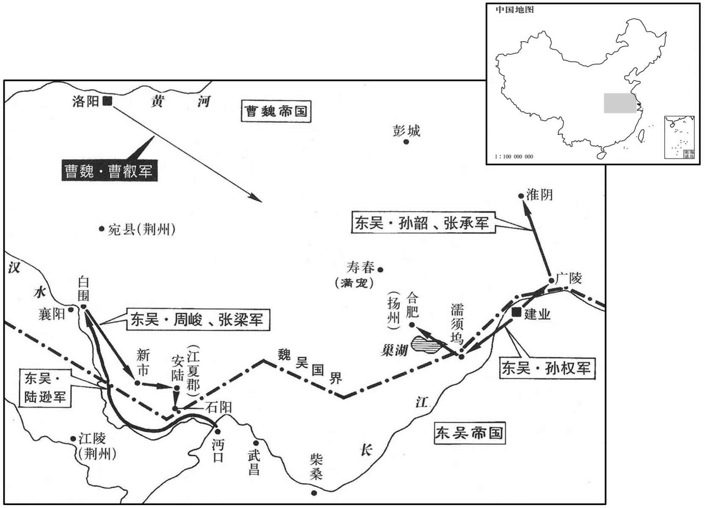

公元234年资治通鉴：本年记事、原文与白话对照
按原书编年位置阅读；追叙和史论不等于本年发生的事件。白话采用所据译本，缺译不以生成译文补齐。
卷72 · 本年记事
公元234年 · 魏烈祖明皇帝青龙二年
二年〔（甲寅、二三四）考异曰：唐太宗晋书景怀夏侯后传，后以此年死。云「宣帝居上
上传原文的注释括号有异常，字符原样保留；无法可靠划分的段落默认全文显示。
本年事件索引（现代整理）
- 胡三省辨析司马懿相关鸩杀传闻，认为并非史实
- 诸葛亮率十万蜀军出斜谷，约吴军同时进兵
- 山阳公刘协去世，曹叡为之素服发丧
- 魏国大赦
- 大疫
- 崇华殿失火，曹叡重修并改名九龙殿
- 诸葛亮进驻五丈原，司马懿据渭水坚守
- 郭淮力主先据北原，击退抢占高地的蜀军
- 诸葛亮在渭滨屯田，保障长期驻军与百姓安定
- 吴军多路围攻魏境，田豫劝满宠坚守合肥新城
- 刘劭建议以精骑绕后断粮，曹叡派兵驰援合肥
- 曹叡命司马懿坚壁待蜀军粮尽，并亲自东征
- 满宠焚毁吴军攻具、射杀孙泰，孙权与孙韶退兵
- 陆逊以镇定示弱诱敌，转兵攻取江夏多县
- 曹叡判断孙权已退、诸葛亮无忧，进至寿春论功行赏
- 汉献帝安葬于禅陵
- 曹叡返回许昌
- 诸葛亮以女服激怒司马懿，司马懿仍奉诏坚守不战
- 司马懿从蜀使处判断诸葛亮劳瘁少食，料其难以持久
- 诸葛亮病重托付后事，指定蒋琬、费祎继掌蜀汉政务
- 诸葛亮病逝五丈原，杨仪整军退兵令司马懿不敢追逼
- 魏延与杨仪积怨日深，诸葛亮生前未能调和
- 费祎向孙权解释魏延、杨仪只是私怨，无意谋反
- 诸葛亮安排退军次序，魏延拒绝受杨仪节制
- 魏延与杨仪争斗致军中分裂，马岱追斩魏延并夷其三族
- 蜀军归成都后追谥诸葛亮为忠武侯，其家无余财
- 张裔称赞诸葛亮赏罚公正，远近皆愿为国效力
- 陈寿评诸葛亮治蜀公平严明、赏罚分明
- 廖立闻诸葛亮去世悲泣，李严亦忧愤而死
- 习凿齿称赞诸葛亮严惩廖立、李严仍能使人心服
- 蜀汉准许百姓在沔阳为诸葛亮立庙
- 蒋琬接掌蜀汉政务，沉稳举止逐渐安定朝野
- 吴蜀互相增兵防备，宗预从容回应孙权质问
- 诸葛恪获准治理丹阳山越，承诺三年练成四万兵
- 洛阳地震
- 潘濬平定武陵蛮，吴国南境恢复安定

本年形势与背景参考图
将之重，诸子并有雄才大略，后知帝非魏之纯臣，而后既魏氏之甥，帝深忌之，遂以鹓崩。」按是时司马懿方信任于明帝，未有不臣之，况其诸子乎！徒以魏甥之故，猥鸩其妻，都非事实，盖甚之之辞。不然，师自以他故鸩之也。今不取。〕
本段缺少可靠对应白话，原文完整保留；未使用生成译文。
春，二月，亮悉大众十万由斜谷入寇，遣使约吴同时大举。
春季，二月，诸葛亮倾十万大军从斜谷出兵攻魏，并派遣使节前往吴 国相约同时大举出兵。
三月，庚寅，山阳公卒，〔献帝自禅位至卒，十有四年，年五十四。〕帝素服发丧。
三月，庚寅（初六），山阳公刘协去世，魏明帝身穿素服发丧。
己酉，大赦。
两版字句有差异，建议核对原文。
已酉（二十五日），大赦天下。
夏，四月，大疫。
夏季，四月，流行瘟疫。
崇华殿灾。〔是岁，复修改崇华曰九龙殿，引谷水过九龙前，为玉井绮栏，蟾蜍含受，神龙吐出。
本段缺少可靠对应白话，原文完整保留；未使用生成译文。
诸葛亮至郿，〔郿，音媚，又音眉。〕军于渭水之南。司马懿引军渡渭，背水为垒拒之，〔背，蒲妹翻。谓诸将曰：「亮若出武功，依山而东，诚为可忧；若西上五丈原，〔水经注：五丈原在郿县西，渭水径其北。又亮与步骘书曰：原在武功西十里。上，时掌翻。〕诸将无事矣。」亮困屯五丈原。
诸葛亮到达县，大军驻扎在渭水的南面。司马懿率领军队渡过渭水，背水立营抵御诸葛亮，对将领们说：“诸葛亮如果从武功出兵，依山而往东，确实可怕；如果向西前往五丈原，将领们就没事了。”诸葛亮果然驻扎在五丈原。
雍州刺史郭淮言于懿曰：〔雍，于用翻。〕「亮必争北原，宜先据之。」议者多谓不然，淮曰：「若亮跨渭登原，连兵北山，隔绝陇道，摇荡民夷，〔荡，徒朗翻。〕此非国之利也。」懿乃使淮屯北原。堑垒未成，〔堑，七艳翻。〕汉兵大至，淮逆击却之。
雍州刺史郭淮对司马懿说：“诸葛亮肯定争夺北原，应当先去占据它。”议论的人多数都说不必这样，郭淮说：“如果诸葛亮跨过渭水登上北原，和北山连兵，断绝长安通往陇西的道路，使百姓和羌人动荡不安，这对国家是不利的。”司马懿便郭淮驻防在北原。营垒还没有筑成，蜀炽大部队已经到来，郭淮迎战，击退了蜀军。
亮以前者数出，〔数，所角翻。〕皆以运粮不继，使己志不伸，乃分兵屯田为久驻之基，耕者杂于渭滨居民之间，而百姓安堵，军无私焉。
诸葛亮因为前几次出兵，都是由于运粮跟不上，使自己的志向不能伸展，就分出部队实行屯田，作为长期驻军的基础，屯田的士兵和渭水之滨居民杂处在一起，而百姓安居乐业，蜀军并无私弊。
五月，吴主入居巢湖口，〔巢湖口即今栅江口也，在和州历阳县西南百五十里，水导源巢湖。裴松之曰：巢，祖了翻。今巢湖与焦湖通，焦、剿音近，故有剿音，今读如字。〕向合肥新城，〔即太和六年汉宠所筑新城也。华夷对境图：魏合肥新城，今为庐州谢步镇。〕众号十万；又遣陆逊、诸葛瑾将万余人入江夏、沔口，向襄阳；〔瑾，渠吝翻。沔；弥兖翻。〕将军孙韶、张承入淮，向广陵、淮阴。六月，汉宠欲率诸军救新城，殄夷将军田豫曰：〔殄夷将军，盖魏所置，然不在沈约志所谓四十号将军之数。〕「贼悉众大举，非图小利，欲质新城以致大军耳。〔质，音致。〕宜听使玫城，挫其锐气，不当与争锋也。城不可拔，众必罢怠；罢怠然后击之，可大克也。〔罢，读曰：疲。〕若贼见计，〔言窥见吾所以待敌之计也。〕必不攻城，势将自走。若便进兵，适入其计矣。」
五月，吴王率军信驻巢湖口，直指合肥新城，号称十万大军；又派遣陆逊、诸葛瑾统率一万余人进入江夏、沔口，进指襄阳；将军孙韶、张承进入淮河，直指广陵、淮阴。六月，满宠想要率领各路大军救援新城，殄夷将军田豫说：“敌人倾巢动，大举进攻，不是为图小利，而是打算以新城为钓饵，引诱我大军前来。应当听任仓们攻打新城，挫伤其锐气，不应与之争战以决胜负，城攻不下，士兵必然疲怠；待他们疲怠后再攻击，可以大获全胜。如果敌人看出这一计策，必不再攻城，势必自行撤退。如果我们马上进军，正中了他们的奸计。”
时东方吏士皆分休，宠表请召中军兵，并召所休将士，〔分休，犹番休也。〕须集击之。散骑常侍广平刘劭议以为：「贼众新至，心专气锐，宠以少人自战其地，〔少，诗沼翻。〕若便进击，必不能制。宠请待兵，未有所失也，以为可先遣步兵五千，精骑三千，先军前发，〔先，悉荐翻。〕声进道震曜形势。骑到合肥，疏其行队，〔疏，读曰捤。行，户刚翻。〕多其旌鼓，曜兵城下，引出贼后，拟其归路，要其粮道。贼闻大军来，骑断其后，必震怖遁走，〔要，一遥翻。断，丁管翻。怖普布翻。〕不战自破矣。」帝从之。
此时，在东方的部队正轮番休假，满宠上表请征召中军兵，并征召休假的将士，集中力量迎战。散骑常侍广平人刘劭商议时认为：“敌军人数众多，而且刚刚来到，意志专一，士气旺盛，满宠因守军人少又在自己防地作战，即使出击，步定不能制胜敌军。他请求援军，没什么过失。我认为可以先派遣步兵五千，精骑兵三千，做为先头出发，扬言从数道进军，造成震慑敌人的形势。骑兵到达合肥，疏散队列，多布旌旗，多擂战鼓，在城下展示兵力，然后带领部队从敌人背后出现，占其退路，扼其粮道。敌人听说我大军前来，骑兵截断了后路，必定震惊而逃，不战自破。”明帝采纳子这一建议。
宠欲拔新城守，致贼寿春，帝不听，曰：「昔汉光武遣兵据略阳，终以破隗嚣，〔事见四十二卷建武八年。〕先帝东置合肥，南守襄阳，西固祁山，贼来辄破于三城之下者，地有所必争也。〔合肥、襄阳以备吴，祁山以备蜀也。〕纵权攻新城，必不能拔。槉诸将坚守，吾将自往征之，比至，恐权走也。」〔比，必寐翻。〕乃使征蜀护军奏朗督步骑二万助司马懿御诸葛亮，槉懿：「但坚壁拒守以挫其锋，彼进不得志，退无与战，久停则粮尽，虏略无所获，则必走；走而追之，全胜之道也。」秋，七月，〔【章：甲十六行本「月」下有「壬寅」二字；乙十一行本同。】〕帝御龙舟东征。
满宠想要转移新城守军，引敌人到寿春，明帝不同意，说：“从前汉光武派遣部队占据略阳，终于攻破隗嚣。先帝在东方设置合肥，在南方把守襄阳，在西方固守祁山，贼兵一来就在这三城之下被击败，其原因正是因为它们处于必争之地。即使权攻打新城，肯定不能攻下。命令将士们坚持守住，我将亲自前往征讨。到那时，孙权恐已经逃走。”于是派遣征蜀护军秦朗统率步、骑兵二万人援助事马懿抵御诸葛亮，命令司马懿：“一定要坚守壁垒，不与决战，挫败敌军锋芒，使们们进攻不能得逞，撤退不能交战，停留时间长久，粮食就要耗尽，劫掠也不会有收获，则必撤军。待敌撤退时再去追击，才是全胜之道。”秋季，七月明帝亲登龙舟东征。
汉宠募壮士焚吴攻具，射杀吴主之弟子泰；〔射，而亦翻。〕又吴吏士多矣病。帝未至数百里，疑兵先至。吴主始谓帝不能出，闻大军至，遂遁，孙韶亦退。
满宠招募壮士焚烧吴国攻城的器械，射死吴王的侄子孙泰，而且吴国官兵多有生病。明帝离吴国驻地数百里时，迷惑敌人的先遣军已先行到达。吴王开始认为明帝不会亲征，听到率大军已到，于是撤走，孙韶也退兵。
陆逊遣亲人韩扁奉表诣吴主，逻者得之。〔扁，补典翻，又音篇。逻郎佐翻。〕诸葛瑾闻之甚惧，书与逊云：「大驾已还，贼得韩扁，具知吾阔狭，且水干，宜当急去。」〔干，音干。〕逊未答，方催人种葑、豆，葑，菜也；谓之蔓菁。豆，菽也。〕与诸将弈棋、射戏如常。瑾曰：「伯言多智略，〔陆逊，一名议，字伯言。〕其必当有以。」乃自来见逊。逊曰：「贼知大驾已还，无所复忧，得专力于吾。又己守要害之处，兵将意动，〔谓敌既知权还，料逊兵当退，已分守要害之处，欲以遮截逊所部兵，既无进取之气，而有遮截之虑，则其意恐动，将至于或降或溃也。复，扶又翻。〕且当自定安之，施设变术，然后出耳。今便示退，贼当谓吾怖，〔怖，普布翻。〕仍来相蹙，必败之势也。」乃密与瑾立计，令瑾督舟船，逊悉上兵马以向襄阳城；〔上，时掌翻。〕魏人素惮逊名，据还赴城。瑾便引船出，逊徐整部伍，张拓声势，步趣船，〔趣，七喻翻。〕魏人不敢逼。行到白围，〔盖立围屯于白河口，因以为名。托言住猎，潜遣将军周峻、张梁等击江夏、新市、安陆、石阳，〔新市、安陆二县，皆属江夏郡。魏初以文聘为江夏太守，屯石阳，舟车凑焉，颇为繁富。沈约曰：江夏曲陵县本名石阳，晋武帝太康元年，改曰曲陵；宋明帝泰始六年，并曲陵入安陆县。〕斩获千余人而还。
陆逊派遣亲信韩扁携带表章到吴王那里，被魏巡逻的人截获。诸葛瑾听到消息后非常害怕，写信给陆逊说：“主上已经撤军回去，敌军俘得韩扁，会完全知道我们的虚实，而且河水已干，应当火速撤军。”陆逊未回答，正在催促部众种菜、种豆，和部将下棋射戏同平常一样。诸葛瑾说：“陆逊足智多谋，他一定有原因。”于是亲自前来会见陆逊。陆逊说”贼军知道主上已经回去，再没有什么忧虑的，得以专门用力对付我。而且他们地住关口要道，我们的兵将心怀恐惧，应当镇定以安军心，再设计权变，然后撤出。现在即便表示撤退，贼军必定认为我们害怕了，仍然会来施加压力，我们势所必败。”于是秘密地与诸葛瑾订下计谋，命令诸葛瑾督领船队，陆逊出动全部兵马以示向襄阳城进发，魏兵素来惧怕陆逊的名声，急忙撤还赶赴襄阳城。诸葛瑾便率领船队驶出，陆逊从容地整理队伍，故作声势，步行走到船上，魏军不敢逼近。行到白围时，假称停留打猎，秘密派遣将军周峻、张梁等袭击江夏、新市、安陆、石阳，杀死俘获一千人余人而还。
群臣以为司马懿方与诸葛亮相守未解，车驾可西幸长穴。帝曰：「权走，亮胆破，大腩走以制之，吾无忧矣。」遂进军至寿春，录诸将功，封赏各有差。
群臣以为司马懿正在同诸葛亮相持不解，明帝可以向西临幸长安。明帝说：“孙权已经退走，诸葛亮必然破胆，大军足以制胜，我没有忧虑了。”于是进军到寿春，检录各将领的功劳，封官授爵赏赐嘉奖各有不同。
八月，壬申，葬汉孝献皇帝于禅陵。〔帝王纪曰：禅陵在浊鹿城西北十胃。贤曰：在今怀州修武县北二十五里。刘澄之地记曰：以汉禅魏，因以名焉。〕
八月，壬申（二十日），在禅陵为汉献帝下葬。
辛巳，帝还许昌。
辛巳（二十九日），明帝返回许昌。
司马懿与诸葛亮相守百余日，亮数挑战，〔数，所角翻。挑，徒了翻。〕懿不出。亮乃遗懿巾帼妇人之服；〔字书：帼，古获翻。妇人丧冠也；又古对翻。据刘昭注补舆服志，公卿、列侯夫人绀绘帼。盖妇人首饰之称，不特丧冠也。遗，于季翻。〕懿怒，上表请战帝使卫尉辛毗杖节为军师以制之。护军姜维谓亮曰：「辛佐治杖节而到，贼不复出矣。」〔治，直吏翻。复，扶又翻。〕亮曰：「彼本无战情，所以固请戢者，以示武于其众耳。将在军，君命有所不受，〔孙武子及司马穰苴之言也。将，即亮翻。〕苟能制吾，岂千里而请战邪！」
司马懿同诸葛亮相持了一百多天，诸葛亮多次挑战，司马懿就是不出兵。诸葛亮就把妇女使用的头巾、发饰和衣服送给司马懿，司马懿恼羞成怒，上表请求出战。明帝派遣卫尉辛毗执持符节为军师来节制司马懿的行动。护军姜维对诸葛亮说：“辛毗持符节来到，贼军不会再出战了。”诸葛亮说：“司马懿本来就无心作战，所以一定要请求出战，是向部众表示敢于用武而已。将领在军中，君主的命令可以不接受，如果他能制胜我军，难道还要远隔千里而请求作战吗？”
亮遣使者至懿军，懿问其寝食及事之烦简，不问戎事。〔懿所惮者亮也，问其寝食及事之烦简，以觇寿命之久近耳，戎事何必问邪！〕使者对曰：「诸葛公夙兴夜寐，罚二十以上，皆亲览焉；所噉食不至数升。」懿告人曰：「诸葛孔明食少事烦，其能久乎！」〔噉，徒滥翻。少，诗沼翻。〕
诸葛亮派遣使节到司马懿军中，司马懿向使者询问诸葛亮的睡眠、饮食和办事多少，不打听军事情况，使者答道：“诸葛公早起晚睡，凡是二十杖以 上的责罚，都亲自披阅；所吃的饭食不到几升。”司马懿告诉人说：“诸葛孔明进食少而事务烦，他还能活多久呢！”
亮病笃，汉〔【章：甲穴六行本「汉」下有「主」字；乙十一行本同。】〕使尚书仆射李福省侍，〔省，悉景翻。〕因谘以国家大计。福至，与亮语已，别去，〔已，竟也，语竟而别也。〕数日复还。〔复，扶又翻；下同。〕亮曰：「孤知君还意，近日言语虽弥日，有所不尽，更来求决耳公所问者，公琰其宜也。福谢：「前实失不谘请，如鈆百年后，谁可任大事者，故辄还耳。乞复请蒋琬之后，谁可任者﹖」亮曰：「文伟可以继之。」又问其次，亮不答。〔费祎，字文伟。亮不答继祎之人，非高帝「此后亦非乃所知」之意，盖亦见蜀之人士无足以继祎者矣。鸣呼！〕
诸葛亮病重，汉后主派遣尚书仆射李福前来问候，同时询问国家大事。李福来到，诸葛亮谈话完毕，辞别而去，几天之后又回来。诸葛亮说：“我知道您返回来的意图，近来虽然整天谈话，有些事还没有交待，又来听取决定了。你所要问的事蒋琬适合。”李福道歉说：“日前确实不曾询问，如您面年这后，谁可以担负重任，所以就又返回。再请问蒋琬之后，谁可承担重任？”诸葛亮说：“费可以继任。“又问费这后怎么样？诸亮没有回答。
是月，亮卒于军中。长史杨仪整军而出。百姓奔告司马懿，懿追之。姜维令仪禾旗鸣鼓，若将向懿者，懿敛军退，不敢偪。〔犹恐亮未死也。〕于是仪结陈而去，〔陈，读曰阵。〕入谷然后发丧。〔入斜谷也。〕百姓为之谚曰：「死诸葛走生仲达。」〔司马懿，字仲达。以当时百姓之谚观之，时人之于孔明何如也！〕懿闻之，笑曰：「吾能料生，不能料死故也。懿按行亮之营垒处所，叹曰：「天下柯才也！」〔方亮之出也，懿以为若西上五丈原，诸将无事矣。及亮既死退军，懿按行其营垒处所，以为天下柯才。观此，则知懿已料亮之必屯五丈原，而力不能制，姑为此言以安诸将之心耳。行，下孟翻。〕追至赤岸，不及而还。〔还，从宣翻。又如字。〕
这个月，诸葛亮在军中去世，长史杨仪整顿军队而退。百姓跑着去报告司马懿，司马懿追赶汉宫。姜维命令杨仪调转战旗方向，擂响战鼓，象是即将对司马懿进攻。司马懿收军后退，不敢向前逼进。于是杨仪结阵离去，进入斜谷之后才发丧。百姓为此事编了一句谚语说：“死诸葛亮吓走活仲达。”司马懿听到后笑着说：“这是我能够意料诸葛亮活着，不能料想诸葛亮已死的缘故。”司马懿到诸葛亮驻军营垒处所察看，感叹说：“真是天下的奇才啊！”追到赤岸，没有追上蜀军而还。
初，汉前军师魏延，〔蜀置中军师、前军师、后军师。〕勇猛过人，善养士卒。每随亮出，辄欲请兵万人，与亮异道会于潼关，如韩信故事，〔韩信请兵故事，见九卷汉高帝二年。〕亮制而不许。延常谓亮为恃，叹恨己才用之不尽。杨仪为人干敏，亮每出军，仪常常规画分部，堸度粮谷，不稽思虑，，斯须便了，〔斯，此也，须待也；言即此待之，便可办事。分，扶问翻。度，徒洛翻。〕军戎节度取办于仪。延性矜高，当时皆避下之，〔下遐稼翻。〕唯仪不假借延，延以为至忿，有如水火。〔言不可同处也。〕亮亮深惜二人之才，不忍有所偏废也。
起初，蜀汉前军师魏延，勇猛过人，善待士兵。每次跟随诸葛亮出兵，总是请求带兵一万人，和诸葛亮分道行军队一样，诸葛亮制止而不许可。魏延常说诸葛亮胆怯，叹息抱怨自己的才干没有得到充分发挥。杨仪为人干练机敏，诸葛亮每次兵，杨仪常常规划调遣部队，筹办粮谷，不假思索，即刻便完，军事节制调度，都依靠杨仪办理。魏延性格矜持高傲，当时众将都避而让之，只有杨仪对他不加忍让，魏延最为忿恨，如同水火不能相容。诸葛亮深深爱惜二人的才干，不忍心偏废任何一方。
费祎使吴，〔费，父沸翻。使，疏吏翻。〕吴主醉，问祎曰：「杨仪、魏延，牧竖小人也，虽尝有鸣吠之益于时务，然既已任之，势不得轻。若一朝无诸葛亮，必为祸乱矣，诸君愦愦，〔愦，古对翻；释云：心乱也。〕不佑防虑于此，岂所谓贻厥孙谋乎！」祎对曰：「仪、延之不协，起于私忿耳，而无黥、韩难御之心也。〔黥布、韩信也。〕今方扫除强贼，混一函夏，〔夏，户雅翻。〕功以才成，业由才广，若舍不此不任，防其后患，是犹备有风波而逆废舟，寸懢，非长计也。」〔懢，与楫同。〕
费出使到吴国，吴王酒醉，问费说：“杨仪、魏延是像牧童一样的小人，虽然曾经以鸡鸣狗吠的本事有益于时务，但是既已任用他俩，情势不能轻视。如果一旦诸葛亮不在了，必定发生祸乱，各位糊涂，不知道对此要用心防备，难道这就是所谓谋及子孙吗？”费答道：“杨仪、魏延的不和，是起因于私忿，而没有黥布、韩信的叛逆心意。如今正在扫除强敌，统一华夏，功劳依靠人才来成就，业绩需要人才来扩展，如果舍弃他们而不任用，防备他们造成后患，就如同防备发生风波反倒弃舟楫一样，不是最好的办法。”
亮病困，与仪乃司马费祎等作身殁之后退军节度，令延断后，〔断，读曰短。〕姜维次之；若延不从命，军便自发。〔亮固知延非仪所能令矣。〕亮卒，仪秘不发丧，令祎往揣延意指。〔揣，初禾翻。〕延曰：「丞相虽亡，吾自见在。〔此魏延矜高之语也。见，贤遍翻。〕府亲官属，便可将丧还葬，〔府亲官属，谓长史以下也。〕吾当自率诸军击贼；云何以一人死废天下之事邪！且魏延何人，当为杨仪之所部勒，作断后将乎！」〔将，即亮翻。〕自与祎共作行留部分，〔分，扶问翻。〕令祎手书与己连名，告下诸将。〔时祎为亮司马，延知仪必不己从，故因祎来，劫与共作行留处分。行谓当从亮丧还者，留，谓当留拒敌者，延欲令祎手书处分之语，告其下诸将也。〕祎绐延曰：「当为君还解杨长史，文吏，稀更军事，〔绐，徒亥翻。为，于伪翻。更，工衡翻。〕必不违命木。」祎出，奔马而去。延寻悔之，已不及矣。〔寻，继也，言继时而悔也。〕
诸葛亮病危的时候，与杨仪和司马费等安排死后退军的调度，命令魏延殿后阻击追敌，姜维作为副将；如果魏延不服从命令，军队便自行出发。诸葛亮去世，杨仪秘而不发丧，让费去魏延处揣度他的意向。魏延说：“丞相虽然去世，还有我在。相府亲信和官属，便可将遗体送还归葬，我当亲自统率各路大军攻击贼军；怎么能因一人死去而废弃天下的大事呢？何况我魏延是何等人，就应当被杨仪约束，作断后的将军吗？”他就私自和费共同作出撤退和留下的安排，让费亲笔写信连同自己签名，传告下面将领。费欺骗魏延说：“我当为您回去向杨仪解释，杨仪是个文官，很少经历军事，一定不会违抗尊命。”费出来，策马奔驰而去。魏延旋即后悔，但已追不到费了。
延遣人觇仪等，欲按亮成规，诸营相次引军还，觇，丑廉翻。翻，又如字；下同。〕延大怒，搀仪未发，〔搀，初衔翻。目后争前曰搀，今人犹言搀先。〕率所领径先南归，所过烧绝阁道。延、仪各相表叛逆，一日之中，羽檄交至。汉主以问侍中董允、留府长史蒋琬，琬、允咸保仪而疑延。仪等令槎山通道，〔槎，仕下翻，邪斫木也。〕昼夜兼行，亦继延后。延先至，据南谷口，〔南谷，即褒谷也。南谷曰褒，北谷曰斜，长四百七十里，同为一谷。〕遣兵逆击仪等，仪等令将军何平于前御延。〔何平，即王平也，本养外家何氏，后复姓王，此从其初姓。〕平叱先登曰：「公亡身尚未寒，汝辈何敢乃尔！」延士众知曲在延，莫为用命，〔为，于伪翻。〕皆散。延独与其子数人逃亡，奔汉人，仪遣将马岱追斩之，遂夷延三族。蒋琬率宿卫诸营北行赴难，〔难，乃旦翻。〕行数十里，延死问至，乃还。〔问，音讯也。〕始，延欲杀仪等，冀时论以己代诸葛辅政，故不降魏而南还击仪，实无反意也。〔延虽无反意，使其辅政，是速蜀之亡也。降，户江翻。〕
魏延派人窥探到杨仪等人打算按照诸葛亮既定的计划，各军营依次带领部队撤还。魏延勃然大怒，抢在杨仪没有发兵之前率领所属部队径先南归，所过之处烧绝栈道。魏延、杨仪各自上表说对方叛逆，一天之内，羽书一并送到都城。汉后主以此事询问侍中董允、留府长史蒋琬，董允、蒋琬都担保杨仪而怀疑魏延。杨仪等人命令砍伐山林打通道路，日夜兼程行进，紧随在魏延之后。魏延先到，占据南谷口派兵迎击杨仪等人，杨仪等命将军何平在前面抵御魏延。何平叱责先登上南谷口的士兵说：“诸葛公死，尸骨未寒，你们怎如此！”魏延的部众知道魏延理亏，不愿为他卖命，都四散逃走。魏延独自和他的儿子共几个人逃奔汉中，杨仪派遣将领马岱追杀了他们，最终诛灭魏延三族。蒋琬率领宿卫各军北上赶汉中，走出几十里，魏延被杀的音讯传来，于是回军。开始时，魏延想杀杨仪等人，希望舆论让自己代替诸葛亮辅政，所以不向魏投降而南还攻击场仪，确实没有叛逆之心。
诸军还成都，大赦，谥诸葛亮曰忠武侯。初，亮表于汉主曰：「成都有桑八百株，薄田十五顷，子弟衣食，自有余饶，臣不别治生以长尺寸。〔治，直之翻。长，知两翻。〕若臣死之日，不使内有余帛，外有赢财，以负陛下。」卒如其所言。〔卒，子恤翻。〕
各路大军返回成都，大赦天下，赐诸葛亮谥号为忠武侯。当初，诸葛亮曾上表汉王说：“我在成都有桑树八百株，薄田十五顷，家中子弟衣食，自有富裕，我没有别的收入增加家产。臣死去之日，必不让家内有多余的绢帛，家外有多余的钱财，而有负陛下。”最后，果如其所言。
丞相长史张裔常称亮曰：「公赏不遗远，罚不阿近，爵不可无功取，刑不可以贵势免，此贤愚所以佥忘其身者也！」
丞相长史张裔常称赞诸葛亮：“他行赏不遗忘疏远的人，处罚不宽恕亲近的人，封爵不允许无功者取得，刑责不因为是权贵而免除。这就是贤能者和一般人都能够忘身报国的原因。”
陈寿评曰：诸葛亮之为相国也，抚百姓，示仪轨，〔仪，度也。轨，法也。〕约官职，从权制，开诚心，布公道；尽忠益时者，虽雠必，赏，犯法怠慢者，虽亲必罚，服罪输情者，虽重必释，游辞巧饰者，虽轻必戮，善无微而不赏，恶无纤而不贬，庶事精练，物理其本，〔言事事物物必从其本而治之。〕循名责车，虚伪不齿；终于邦域之内，咸畏而爱之，刑政虽峻而无怨者，以其用心平而劝弁明也，可谓识治之良才，管、萧之亚匹矣。〔治，直吏翻。亚，次也。匹，偶也。
陈寿评曰：诸葛亮当丞相，安抚百姓，显示法度准则，限制官员的职权，遵照法令制度，开诚布公，坦白无私。对尽忠而有益于国家的人，即使是仇人也必加奖赏，对违法而怠慢的人，即使是亲近者也必定处罚；对真心诚意认罪悔改的人，即使罪行较重也必定释放，对革命化言巧语进行掩饰的人，即使罪行较轻也必定诛杀；再小的善行也予以赞扬，再小的恶行也予以贬责。精熟各种事物，能从根本上治理，要求名义与实际相符，端端厌恶虚伪。最终是蜀国上下都对他怀有敬晨爱戴之情，刑罚虽然严苛，但没有怨恨，这是因为他用心公正，而且劝诫分明。可以说他是懂得治国之道的卓越人才，与管仲和萧何并列。
初，长水校尉廖立，〔廖，力吊翻，姓也。裴松之音理救翻。姓谱：廖姓，周文王子伯廖之后，后汉有廖湛。风俗通曰：古有廖叔安，左传作飂，盖其后也。〕自谓才名宜为诸葛亮之副，常以职位游散，〔散悉亶翻。〕怏怏怨谤无已，亮废立为民，徙之汶山。〔据立传，废徙汶山，后主初立之时也。汶山，汉武帝开为郡，宣帝地节三年，合于蜀郡，蜀又分置汶山郡；唐为茂州汶山县。汶，音崏。〕及亮卒，立垂泣曰：「吾终为左衽矣！」李平闻之，亦发病死。〔平废徙，见上寸和五年。〕平常冀亮复收己，得自补复策后人不能故也。〔复，扶又翻。〕
当初，长水校尉廖立，自以为才气名声适宜作诸葛亮的副手，常因职位调动频繁，抱怨诽谤，怏怏不已。诸葛亮罢免廖立为平民，放逐到汶山。到诸葛亮去世，廖立流着泪说：“我终生要做野人了！”李平听到噩耗，也发病而死。这是由于李平常常希望诸葛亮再次收用自己，得以补过，而料想后来的当权者不能这样做的缘故。
习凿齿论曰：昔管仲夺伯氏骈邑三百，没齿而无怨言，圣人以为难。〔见论语，。郑氏曰：小国之下大夫，采地方一成，其定税三百家故三百户也。其实大国下大夫亦三百户，故论语云：管仲夺伯氏骈邑三百。一成所以三百家者，一成九百夫，宫至、涂巷、山泽，三分去一，余有六百夫，又不易再易，通率一家受二夫之田，是定税三百家也。〕诸葛亮之使廖立垂泣，李严致死，岂徒无怨言而已哉！夫水至平而邪者取法，鉴至明而丑者忘怒；水鉴之所以能穷物而无怨者，以其无私也。水鉴无私，犹以免谤；况大人君子怀乐生之心，〔乐，音洛。〕流矜恕之德，法行于不可不用，刑加乎自犯之罪，爵之而非私，诛之而不怒，天下有不服者乎！
两版字句有差异，建议核对原文。
习凿齿论曰：从前管仲夺了伯氏在骈地的采邑三百多家，伯氏终生没有怨言而已！圣人都取为是件难事。诸葛亮去世使廖立流泪哭泣，李平发病而死，岂只是没有怨言而已！水最平正，倾斜的物体会取以为准；镜最明亮，丑陋的人会忘记发怒。平水、明镜所以能使万物原形毕现而不招致怨恨的原因，是由于它们无私。水、镜无私，还可以因此免遭毁谤，何况大人君子心怀怜惜众生的爱心，广布体恤宽恕的恩德，法在不可不用时才使用，刑罚加于罪犯自己所犯下的罪行，不因怒而诛杀，天下还会有不顺服的人吗？
蜀人所在求为诸葛亮立庙，汉主不听；〔为，于伪翻。〕百姓遂因时节私祭之于道陌上。步兵校尉习隆等〔姓谱：习，国名，后似为姓。风俗通：汉有习响，为陈相。〕上言：请近其墓，立一庙于沔阳，〔近，其靳翻。〕断其私祀。〔断，音短。〕汉立从之。
蜀地民众请求为诸葛亮建立祭庙，汉王不准。百姓于是随着岁时节令在路上自己祭祀。步兵校尉习隆等向上建议：请在靠近诸葛亮墓地的沔阳，建立一个祭庙，断绝私人祭祀。汉后主同意了。
汉主以左将军吴懿为车骑将军，假节，督汉中，〔代魏延也。〕以丞相长史蒋琬为尚书令，总统国事，寻加琬行都护，假节，领益州刺史。时新丧元帅，〔丧，息良翻。〕远近危悚，琬出类拔萃，〔类，伦也。萃，聚也。〕处群僚之右，〔处，昌吕翻。〕既无戚容，又无喜色，神守举止，有如平日，由是众望渐服。
汉后主任左将军吴懿为车骑将军，授予符节，督领汉中，任丞相长史蒋琬为尚书令，总管国事，不久又给蒋琬加官行都护，授予符节，兼益州刺史。当时刚刚失去统帅，远近都惶惶不安，蒋琬则出类拔萃，处在百官之首，既没有悲戚的面容，也没有高兴的样子，神态举止，如同平日。于是逐渐赢得人心。
吴人闻诸葛亮卒，恐魏承衰取蜀，增巴丘守万人，〔此巴丘即巴陵也。今岳州巴陵县有天岳山，临大江，一名幕箪，前有培塿，谓之巴蛇冢，相传以为羿屠巴蛇于洞庭，其骨若陵，因谓之巴陵。〕一欲以为救援，二欲以事分割。汉人闻之，亦增永安之守防非常。汉主使右中郎将宗预使吴，〔使，疏吏翻。〕吴主问曰：「东之与西，譬犹一家，而闻西更增白帝之守，何也﹖」对曰：「臣以为东益巴丘饮戌，西增竹帝之守，皆事势宜然，俱不足以相问也。」吴主大笑，嘉其抗尽。〔谓抗言不为吴屈，又尽情无所隐也。〕礼之亚于邓芝。〔蜀先主殂，诸葛亮当国，始遣邓芝使吴。〕
吴国听说诸葛亮去世，害怕魏乘机攻取蜀地，增加巴丘守军一万人，一是打算用以救援，二是打算待机分割。蜀国听到后，也增加永安的守军的以防止非常情况发生。汉后主命右中郎将宗预出使吴国，吴王问道：“吴国与西蜀，尤如一家，可是听说西蜀却增加了白帝城的守军，为什么？”宗预对答说：“我认为吴国增加巴丘的军队，西蜀增加白帝城的守卫，都是符合时势的必然举动，都不足以互相询问。”吴王大笑，称赞他抗言不屈，言无所隐。对他的礼遇仅次于邓芝。
吴诸葛恪以丹阳山险，民多果劲，虽前发兵，徒得外县平民而已，〔陆逊先尝部伍山越为兵，事见六十八卷汉献帝建安二十四年。〕其余深远，莫能禽尽，屡自求为官出之，〔为，于伪翻。〕三年可得甲士四万。众议咸以为：「凡阳地势险阻，与吴郡、会稽、新都、番阳四郡邻接，〔会，工外翻。番，蒲何翻。〕周旋数千里，山谷万重。〔重，直龙翻。〕其幽邃人民，未尝入城邑，对长吏，〔长，知两翻。〕皆使兵野逸，白首于林莽；〔莽，莫补翻，又母党翻；草深曰莽。〕逋亡宿恶，咸共逃窜。山出铜铁，自铸甲兵。俗好武习战，〔好，呼到翻。〕高尚气力；其升山越险，抵突丛棘，若鱼之走渊，猿狖之腾木也。〔走，音奏。狖，余救翻。说文曰：狖，鼠属，善旋。〕时观间隙，〔间，古苋翻。〕出为寇盗，每致兵征伐，寻终不逮，〔逮，及也；谓恪所出山民终不能及四万之数也。〕叹曰：「恪不大兴吾家，将赤吾族也！」恪盛陈其必捷，吴主乃拜恪抚越将军，〔以招抚山越为将军号。〕领丹阳太守，使行其策。
吴国诸葛恪因丹阳山路程险阻，山民又多强悍，虽然以前出征讨，只是空得一些外县的平民而已，其余都藏在深山远谷，不能全部擒获，便多次请求到当地做官让山民出山，保证三年可获得士兵四万。大家都认为：“丹阳地势险阻，与吴郡、会稽、新都、番阳四郡邻接，周围数千里，山谷万重。当地人民深居幽谷，从没有进过城，遇到官吏，都是手持武器，在山野中逃跑，老死在丛林之中。被追捕逃亡的惯犯，也都一起逃窜。山里出产铜铁，自己铸造兵器。民俗喜好练武，熟习打仗，崇尚气势勇力。他们爬高山越险地、穿密林过棘丛，好象鱼游深渊、猿猴攀树一样自如。不时观察机会，出山抢掠，时常招致官兵讨伐，寻找他们藏身的山洞。他们战则一轰而上，败则如鸟飞鼠窜，从前代以来，一直没能制服他们。”大家都认为很难。诸葛恪的父亲葛谨听到后，也认为事情最终办不到，叹息说：“诸葛恪不能使我家兴旺，终将使家门败灭！”诸葛恪一再说他必能取胜报捷，吴王于是任命他为抚越将军，兼丹阳太守，让他按自己的计划行事。
冬，十一月，洛阳地震。
冬季，十一月，洛阳发生地震。
吴潘浚讨武陵蛮，数年，斩获数万。自是群蛮衰弱，一方宁静。十一月，浚还武昌。〔太和五年，吴遣潘浚讨武陵蛮。〕
吴国潘浚讨伐武陵蛮夷，几年时间，斩杀俘获几万人。自此之后，各蛮夷部落衰落，一方平静无事。十一月，潘浚返回武昌。
译本中未与胡注本可靠对应的内容
以下另列供核对版本差异，不并入胡注本正文。
译本所附古文
[5]崇华殿灾。
译本白话
洛阳崇华殿发生火灾。